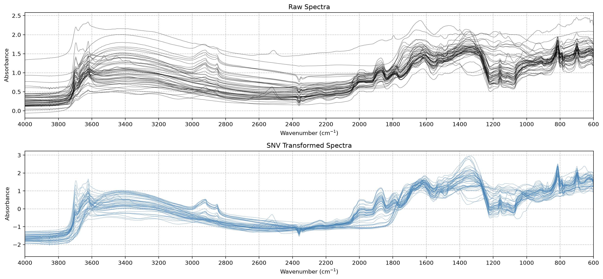
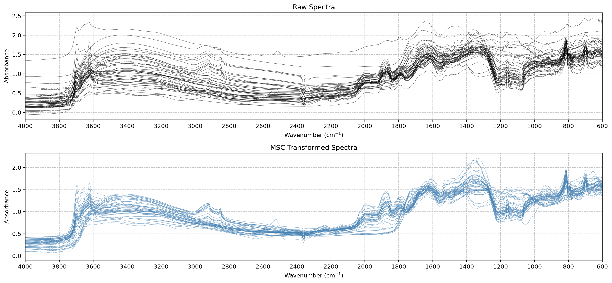
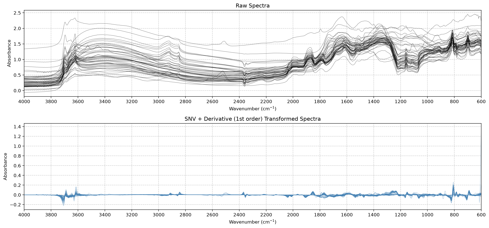
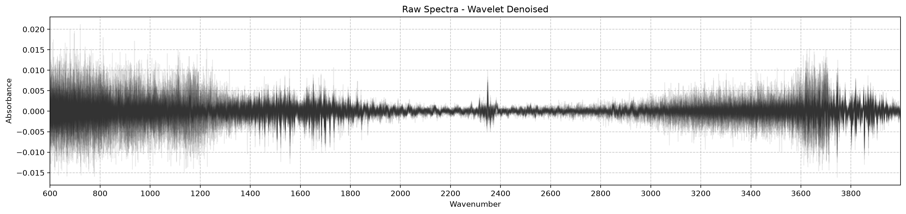
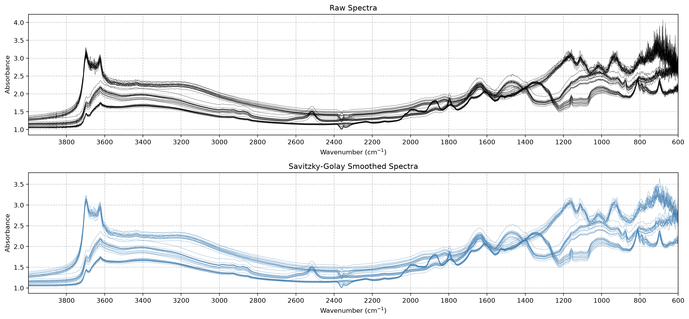
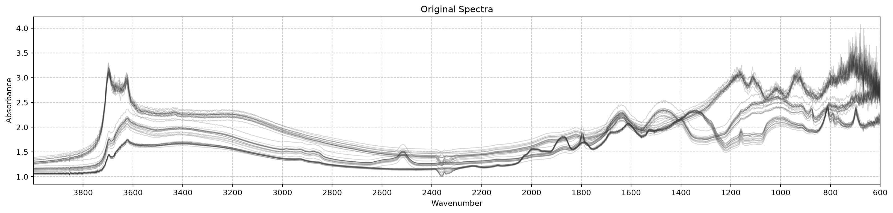
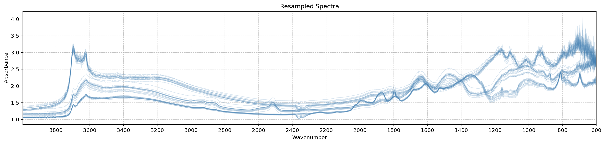
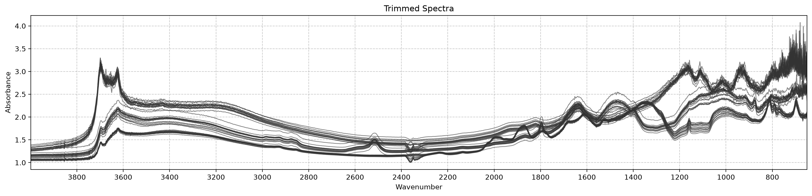

from sklearn.pipeline import Pipeline
from scipy.stats import iqr
from soilspectfm.visualization import plot_spectra
from matplotlib import pyplot as plt
from soilspectfm.visualization import plot_spectra_comparison
from soilspectfm.datasets import load_toy_mir, load_toy_noisy_mirPreprocessing
Scikit-learn transformers for preprocessing soil spectra
Each transformer follows the scikit-learn estimator API, with fit, transform, fit_transform, get_params and set_params. You can chain transformers in a Pipeline and tune their parameters with GridSearchCV. Every transformer takes a 2-D array X with one row per spectrum and one column per wavenumber, and returns a 2-D array.
The examples use the toy MIR dataset from load_toy_mir: 50 spectra measured from 600 to 4000 cm⁻¹, every 2 cm⁻¹.
X, ws = load_toy_mir()Baseline corrections
SNV
def SNV(
center_func:Callable=mean, # Function to center the data
scale_func:Callable=std, # Function to scale the data
eps:float=1e-10, # Small value to avoid division by zero
):Center and scale each spectrum independently (Standard Normal Variate)
Exported source
class SNV(BaseEstimator, TransformerMixin):
"Center and scale each spectrum independently (Standard Normal Variate)"
def __init__(self,
center_func: Callable=np.mean, # Function to center the data
scale_func: Callable=np.std, # Function to scale the data
eps: float=1e-10 # Small value to avoid division by zero
):
store_attr()
def fit(self, X, y=None): return self
def transform(self,
X: np.ndarray # Spectral data to be transformed
) -> np.ndarray: # Transformed spectra
center = self.center_func(X, axis=1, keepdims=True)
scale = self.scale_func(X - center, axis=1, keepdims=True) + self.eps
return (X - center) / scaleSNV subtracts a center from each spectrum and divides by a spread, both computed across its wavenumbers. This removes baseline offsets and multiplicative scatter effects that differ between samples. SNV needs no fitted statistics: fit does nothing, and each spectrum is corrected on its own.
center_func and scale_func accept any function that takes numpy’s axis and keepdims arguments. Common choices:
| Role | Function | Behavior |
|---|---|---|
| Center | np.mean (default) |
Standard choice, sensitive to outliers |
| Center | np.median |
Less affected by outliers, slower |
| Center | np.min |
Makes all values non-negative, sensitive to noise |
| Center | lambda x, **kw: 0 |
No centering, keeps absolute values |
| Scale | np.std (default) |
Standard choice, assumes a normal distribution |
| Scale | lambda x, **kw: np.sqrt(np.mean(x**2, **kw)) |
Root mean square, suits baseline variations |
| Scale | scipy.stats.iqr |
Less affected by outliers and extreme peaks |
| Scale | lambda x, **kw: np.max(x, **kw) - np.min(x, **kw) |
Range, keeps relative peak heights |
| Scale | lambda x, **kw: np.median(np.abs(x - np.median(x, **kw)), **kw) |
Median absolute deviation, least affected by outliers, slower |
With the defaults, every corrected spectrum has mean 0 and standard deviation 1:
X_tfm = SNV().fit_transform(X)
test_close(X_tfm.mean(axis=1), 0)
test_close(X_tfm.std(axis=1), 1)A median center with an interquartile-range scale reduces the influence of strong peaks. Each corrected spectrum then has a median of 0:
X_rob = SNV(center_func=np.median, scale_func=iqr).fit_transform(X)
test_close(np.median(X_rob, axis=1), 0)plot_spectra_comparison(X, X_tfm, ws, raw_title='Raw Spectra', transformed_title='SNV Transformed Spectra');
MSC
def MSC(
reference_method:Union[str, numpy.ndarray]='mean', # 'mean', 'median', or a reference spectrum
):Multiplicative Scatter Correction against a reference spectrum
Exported source
class MSC(BaseEstimator, TransformerMixin):
"Multiplicative Scatter Correction against a reference spectrum"
def __init__(self,
reference_method: Union[str, np.ndarray] = 'mean', # 'mean', 'median', or a reference spectrum
):
store_attr()
def _compute_reference(self, x: np.ndarray):
"Compute reference spectrum from array using specified method"
if isinstance(self.reference_method, str):
if self.reference_method not in ('mean', 'median'): raise ValueError("reference_method must be 'mean', 'median' or a spectrum")
return np.mean(x, axis=0) if self.reference_method == 'mean' else np.median(x, axis=0)
return np.array(self.reference_method)
def fit(self, X: np.ndarray, y=None):
"Compute the reference spectrum"
self.reference_ = self._compute_reference(X)
return self
def transform(self,
X: np.ndarray # Spectral data to be transformed
) -> np.ndarray: # Transformed spectra
"Apply MSC to the spectra"
check_is_fitted(self)
X = np.asarray(X)
slope, intercept = np.polyfit(self.reference_, X.T, deg=1)
return (X - intercept[:, None]) / slope[:, None]MSC models each spectrum x as a linear function of a reference spectrum, x ≈ a + b·reference. It fits a and b by least squares, then returns (x - a) / b. This removes additive and multiplicative scatter effects relative to the reference.
fit sets reference_ to the mean or median of the training spectra, or to the spectrum you pass as reference_method. transform corrects new spectra against that stored reference, so test spectra are corrected against the training reference. After correction, regressing each spectrum on the reference gives a slope of 1 and an intercept of 0:
msc = MSC().fit(X)
X_msc = msc.transform(X)
slope, intercept = np.polyfit(msc.reference_, X_msc.T, deg=1)
test_close(slope, 1)
test_close(intercept, 0)reference_method='median' uses the median spectrum as the reference, which is less sensitive to outlying samples:
X_tfm = MSC(reference_method='median').fit_transform(X)plot_spectra_comparison(X, X_msc, ws, raw_title='Raw Spectra', transformed_title='MSC Transformed Spectra');
Asymmetric least squares (ALS) baseline correction is planned. References:
- https://eigenvector.com/wp-content/uploads/2020/01/RobustFittingtoBasisFunctionsIII.pdf
- https://nirpyresearch.com/two-methods-baseline-correction-spectral-data/
- https://diposit.ub.edu/dspace/bitstream/2445/188026/1/2014_IEEE_Adaptive_MarcoS_postprint.pdf
Savitzky-Golay filter
SavitzkyGolay
def SavitzkyGolay(
window_length:int=15, # Number of points in each filter window, odd
polyorder:int=3, # Degree of the polynomial fitted in each window
deriv:int=0, # Derivative order, 0 to smooth only
):Savitzky-Golay smoothing or derivative of each spectrum
Exported source
class SavitzkyGolay(BaseEstimator, TransformerMixin):
"Savitzky-Golay smoothing or derivative of each spectrum"
def __init__(self,
window_length:int=15, # Number of points in each filter window, odd
polyorder:int=3, # Degree of the polynomial fitted in each window
deriv:int=0 # Derivative order, 0 to smooth only
): store_attr()
def fit(self,
X:np.ndarray, # Spectra, one per row
y:np.ndarray=None # Ignored
):
"Check that the filter parameters are consistent"
if self.window_length % 2 == 0: raise ValueError("window_length must be odd")
if self.window_length <= self.polyorder: raise ValueError("window_length must be greater than polyorder")
if self.deriv > self.polyorder: raise ValueError("deriv must be <= polyorder")
return self
def transform(self,
X:np.ndarray # Spectra, one per row
) -> np.ndarray: # Filtered spectra
"Filter each spectrum"
return savgol_filter(np.asarray(X), self.window_length, self.polyorder, self.deriv)SavitzkyGolay fits a polynomial of degree polyorder within each window of window_length points. With the default deriv=0, it replaces each point by the fitted value, which smooths the spectrum. With deriv=1 or deriv=2, it returns the derivative of the fitted polynomial instead. Derivatives are taken per wavenumber step, not per cm⁻¹. fit checks that window_length is odd and greater than polyorder, and that deriv is at most polyorder.
Smoothing leaves a polynomial of degree up to polyorder unchanged:
poly = ((ws / 1000) ** 3)[None]
test_close(SavitzkyGolay().fit_transform(poly), poly)A first derivative removes constant baseline offsets, and a second derivative also removes linear baseline slopes. Adding a constant offset to every spectrum leaves the first derivative unchanged:
sg1 = SavitzkyGolay(deriv=1)
test_close(sg1.fit_transform(X + 0.5), sg1.fit_transform(X))Derivatives usually follow a scatter correction. In a Pipeline, SNV runs first, then SavitzkyGolay:
pipe = Pipeline([('snv', SNV()), ('deriv', SavitzkyGolay(deriv=1))])
X_tfm = pipe.fit_transform(X)plot_spectra_comparison(X, X_tfm, ws, raw_title='Raw Spectra', transformed_title='SNV + Derivative (1st order) Transformed Spectra');
Smoothing
WaveletDenoise
def WaveletDenoise(
wavelet:str='db6', # Wavelet to use for decomposition
level:Optional[int]=None, # Decomposition level. If None, maximum level is used
threshold_mode:str='soft', # Thresholding mode, 'soft' or 'hard'
):Wavelet denoising of each spectrum
Exported source
class WaveletDenoise(BaseEstimator, TransformerMixin):
"Wavelet denoising of each spectrum"
def __init__(self,
wavelet:str='db6', # Wavelet to use for decomposition
level:Optional[int]=None, # Decomposition level. If None, maximum level is used
threshold_mode:str='soft' # Thresholding mode, 'soft' or 'hard'
):
store_attr()
def _denoise_single(self, spectrum):
"Denoise a single spectrum"
coeffs = pywt.wavedec(spectrum, self.wavelet, level=self.level_)
detail_coeffs = np.concatenate(coeffs[1:])
sigma = np.median(np.abs(detail_coeffs)) / 0.6745
threshold = sigma * np.sqrt(2 * np.log(len(spectrum)))
new_coeffs = list(coeffs)
for i in range(1, len(coeffs)):
new_coeffs[i] = pywt.threshold(coeffs[i], threshold * (1 / 2 ** ((self.level_ - i) / 2)), mode=self.threshold_mode)
denoised = pywt.waverec(new_coeffs, self.wavelet)
return denoised[:len(spectrum)]
def fit(self, X, y=None):
"Set `level_`: `level`, or the deepest level the spectrum length allows"
self.level_ = ifnone(self.level, pywt.dwt_max_level(np.shape(X)[1], pywt.Wavelet(self.wavelet).dec_len))
return self
def transform(self, X):
"Denoise each spectrum"
X = np.asarray(X)
X_denoised = np.zeros_like(X)
for i in range(X.shape[0]): X_denoised[i] = self._denoise_single(X[i])
return X_denoisedWaveletDenoise decomposes each spectrum with a discrete wavelet transform, shrinks the detail coefficients, and reconstructs the spectrum. The base threshold is the universal threshold σ·√(2·ln n), where n is the spectrum length. σ is the median absolute value of all detail coefficients divided by 0.6745. For the i-th detail band, counted from the coarsest (i = 1) to the finest (i = level_), the threshold is multiplied by 2^(-(level_ - i)/2), so coarser bands get smaller thresholds. threshold_mode selects soft or hard thresholding, as in pywt.threshold.
The smoothing examples use load_toy_noisy_mir: 48 noisy MIR spectra from 599.9 to 3998.4 cm⁻¹, about every 1 cm⁻¹. From here on, X and ws refer to this dataset:
X, ws, _ = load_toy_noisy_mir()The difference between the raw and denoised spectra shows the noise that WaveletDenoise removes:
X_denoised = WaveletDenoise(wavelet='db6', level=5, threshold_mode='soft').fit_transform(X)
plot_spectra(X - X_denoised, ws, alpha=0.1, title='Raw Spectra - Wavelet Denoised');
With the default level=None, fit sets level_ to the deepest decomposition level that the spectrum length allows:
wd = WaveletDenoise().fit(X)
test_eq(wd.level_, pywt.dwt_max_level(X.shape[1], 'db6'))
wd.level_8SavitzkyGolay with its defaults also smooths the noisy spectra:
X_smoothed = SavitzkyGolay().fit_transform(X)
plot_spectra_comparison(X, X_smoothed, ws, raw_title='Raw Spectra', transformed_title='Savitzky-Golay Smoothed Spectra');
Other transformations
ToAbsorbance
def ToAbsorbance(
eps:float=1e-05, # Small value to avoid log(0)
):Convert reflectance to absorbance, -log10(R)
Exported source
class ToAbsorbance(BaseEstimator, TransformerMixin):
"Convert reflectance to absorbance, `-log10(R)`"
def __init__(self,
eps: float=1e-5 # Small value to avoid log(0)
): self.eps = eps
def fit(self, X, y=None): return self
def transform(self, X, y=None): return -np.log10(np.clip(X, self.eps, 1))ToAbsorbance converts reflectance R to absorbance A = -log10(R). It first clips R to the range [eps, 1], so zero or negative values don’t produce infinities, and values above 1 give an absorbance of 0:
test_close(ToAbsorbance().fit_transform(np.array([[1, 0.1, 0.01]])), [[0, 1, 2]])Resample
def Resample(
source_x:numpy.ndarray, # Source x-axis points (wavenumbers or wavelengths)
target_x:numpy.ndarray, # Target x-axis points (wavenumbers or wavelengths) for resampling
interpolation_kind:str='cubic', # Spline kind: 'linear', 'quadratic' or 'cubic'
):Resample spectra onto new x-axis points by spline interpolation
Exported source
class Resample(BaseEstimator, TransformerMixin):
"Resample spectra onto new x-axis points by spline interpolation"
def __init__(self,
source_x: np.ndarray, # Source x-axis points (wavenumbers or wavelengths)
target_x: np.ndarray, # Target x-axis points (wavenumbers or wavelengths) for resampling
interpolation_kind: str='cubic' # Spline kind: 'linear', 'quadratic' or 'cubic'
):
store_attr()
def fit(self,
X: np.ndarray, # Spectral data to be resampled
y: np.ndarray=None # Ignored
):
"Check `X` against `source_x`, check `target_x` is in range, and sort `source_x`"
n_cols, n_src = np.shape(X)[1], len(self.source_x)
if n_cols != n_src: raise ValueError(f"X has {n_cols} columns but source_x has {n_src} points")
self.order_ = np.argsort(self.source_x)
lo, hi = np.asarray(self.source_x)[self.order_[[0, -1]]]
if np.min(self.target_x) < lo or np.max(self.target_x) > hi:
raise ValueError(f"target_x must lie within the source_x range [{lo}, {hi}]")
return self
def transform(self,
X: np.ndarray # Spectral data to be resampled
):
"Interpolate each spectrum at `target_x`"
k = dict(linear=1, quadratic=2, cubic=3)[self.interpolation_kind]
xs = np.asarray(self.source_x)[self.order_]
return make_interp_spline(xs, np.asarray(X)[:, self.order_], k=k, axis=1)(self.target_x)Resample interpolates each spectrum from source_x onto target_x, for example to put spectra from different instruments on one wavenumber grid. Here the noisy spectra, sampled about every 1 cm⁻¹, are resampled every 2 cm⁻¹:
new_ws = np.arange(600, 3998, 2)
X_resampled = Resample(source_x=ws, target_x=new_ws).fit_transform(X)
test_eq(X_resampled.shape, (len(X), len(new_ws)))
plot_spectra(X, ws, ascending=False, title='Original Spectra', alpha=0.2);
plot_spectra(X_resampled, new_ws, ascending=False, title='Resampled Spectra', alpha=0.2, color='steelblue');

interpolation_kind sets the spline degree: 'linear', 'quadratic' or 'cubic'. Linear resampling gives the same result as np.interp:
X_lin = Resample(ws, new_ws, interpolation_kind='linear').fit_transform(X)
test_close(X_lin, np.array([np.interp(new_ws, ws, x) for x in X]))fit raises a ValueError when target_x goes beyond the range of source_x, instead of extrapolating. The noisy spectra end at 3998.4 cm⁻¹, so a grid up to 4000 cm⁻¹ fails:
test_fail(lambda: Resample(ws, np.arange(600, 4001, 2)).fit(X), contains='source_x range')source_x can be in decreasing order, as some instruments export spectra from high to low wavenumbers. fit sorts it, and reorders the columns of X to match:
test_close(Resample(ws[::-1], new_ws).fit_transform(X[:, ::-1]), X_resampled)Trim
def Trim(
ws:numpy.ndarray, # Wavenumbers or wavelengths
w_min:Optional[float]=None, # Minimum wavenumber or wavelength
w_max:Optional[float]=None, # Maximum wavenumber or wavelength
):Keep the wavenumbers (or wavelengths) between w_min and w_max
Exported source
class Trim(BaseEstimator, TransformerMixin):
"Keep the wavenumbers (or wavelengths) between `w_min` and `w_max`"
def __init__(self,
ws: np.ndarray, # Wavenumbers or wavelengths
w_min: Optional[float]=None, # Minimum wavenumber or wavelength
w_max: Optional[float]=None # Maximum wavenumber or wavelength
):
store_attr()
def fit(self,
X: np.ndarray, # Spectra to be trimmed
y: Optional[np.ndarray]=None # Ignored
):
"Compute `mask_`, the columns whose wavenumber is inside the range"
self.mask_ = (self.ws >= (-np.inf if self.w_min is None else self.w_min)) & \
(self.ws <= (np.inf if self.w_max is None else self.w_max))
return self
def transform(self, X: np.ndarray) -> np.ndarray:
"Keep the columns inside the range"
return X[:, self.mask_]
def get_wavenumbers(self) -> np.ndarray:
"Return the trimmed wavenumbers"
return self.ws[self.mask_]Trim keeps the wavenumbers between w_min and w_max, inclusive. A bound left as None leaves that side open. get_wavenumbers returns the kept wavenumbers, to use as the x-axis of the trimmed spectra:
trimmer = Trim(ws, w_min=650, w_max=4000)
X_trimmed = trimmer.fit_transform(X)
trimmed_ws = trimmer.get_wavenumbers()
assert trimmed_ws.min() >= 650 and trimmed_ws.max() <= 4000
plot_spectra(X_trimmed, trimmed_ws, title='Trimmed Spectra', ascending=False);